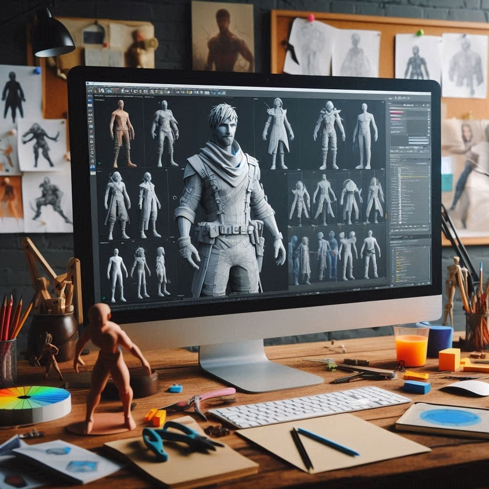

Imagine a time when stunning graphics in video games were just a dream… And 3D characters were simple polygonal shapes. Fast forward a few decades, and now we enjoy detailed characters. They almost seem real. But making 3D models is rapidly evolving, and we will explore this fascinating process in our guide to creating 3D characters in collaboration with the game art studio VSquad
What is 3D Character Modeling and How Does it Work?
This is art in the digital world. Creating three-dimensional objects using specialized software. 3D models come to life in video games, animated films, virtual reality projects and even engineering developments. The process of character modeling begins with a basic idea and ends with the final implementation of the model.
Fun fact!
3D modeling was first used in the film industry in 1968 to create special effects in the film "2001: A Space Odyssey." This film was one of the first to use computer technology to create visual effects. Since then, technology has advanced greatly and is now used everywhere from games to medicine.
Basic Steps to Modeling a 3D Character
The first step in creating a 3D character is to develop concept art and initial design. This stage is extremely important because it sets the visual direction for the entire model. Without a good concept, it is easy to lose focus on detail and proportions, which will make further work difficult. This is where you learn how to make a character that aligns with the vision of the game or project.
Step 1. Concept Art and Initial Design
In turn, it includes:
1. Research and collection of references
Before you start drawing a concept, it is important to collect all possible reference images that will help form the overall image of the character. These can be photos of real people to study anatomy and skin texture, other characters from films, historical or cultural sources for inspiration. This is where character concept ideas begin to take shape.
2. Concept development
Based on the collected references, the artist begins working on sketches, creating the first ideas for the character. This is work on shape and proportions, personality and emotions, clothing elements, and accessories, all of which come together to form the character concept.
3. Development of various poses
To better understand how the character will move or look in different situations, it is important to develop several poses. These poses will help in the future to model the character taking into account the dynamics of movement.
4. Final approval of the concept
After creating several sketches, it is important to choose one that will serve as the basis for the future 3D character model. This concept is usually approved by the team or the client (in the case of professional development).
P.S.
Concept art is not just an artistic sketch, it is the basis for all further work.
Step 2. Modeling the Character
Once the character concept is ready, you can start modeling. This is one of the most technically complex and creative stages, where the concept turns into a 3D model. Here, you will learn how to make a 3D model that reflects the original design.
Initially, a basic model of the character is created - this is the starting version, which does not have many details, but already reflects the main forms and proportions. At this stage, it is important to lay down the basic anatomy - the body, proportions, basic forms.
Once the main volume and proportions are established, the retopology process follows - this is the processing of a high-polygon model (if sculpting was used) into a more optimized version for animation.
It is important that the topology lines follow the natural curves of the body, which will make the animation smoother. At this stage, the model begins to acquire more details, which makes it more recognizable and closer to the final look. There is a transition to the stage of face modeling, the formation of textures and folds, detailing of clothes and accessories.
Most characters are modeled symmetrically, especially in the early stages. This makes the process easier, since one side can be mirrored onto the other. Most 3D programs (e.g. Blender, ZBrush, Maya) have tools for symmetrical work, allowing you to model both sides at the same time.
Once the model is ready, it needs to be prepared for texture application. UV unwrapping is the process of unwrapping a 3D model into 2D space so that textures can be applied. The unwrapping should take into account details, such as seams on clothing or folds in the skin, so that the textures look natural.
Next, we check the proportions and details. At this stage, it is important to check and make sure that all parts of the character are proportional, there are no distortions or errors in the topology, and that the details match the concept. Once the basic model is complete, you can move on to the next stage.

.jpg)
Step 3. Adding Details and Textures
When the basic shape of the 3D character is ready, the next important step is adding details and textures. This is the stage where the character becomes more realistic and expressive.
The next step is adding small details to make the 3D character more realistic. The 3D artist works on such details as wrinkles, clothing texture, hair, nails, etc.
Then we work on textures - these are images that are superimposed on the 3D model, giving it depth and realism. For example, the skin texture can include roughness, spots, pigmentation, the texture of clothing fabrics - folds and stretches. Textures can be created manually or by scanning real objects.
At the next stage, the artist also applies various materials and shaders to simulate the behavior of the model's surface in different lighting conditions. For example, skin can be matte, clothing - with a slight shine, and metal - with reflections.
And finally - the arrangement of lighting. With the right lighting, the 3D character will look different depending on how the light falls on the textures and shaders. It is important to test different light sources and their placement to ensure that the character will look as natural as possible under different conditions.
Step 4. Rigging Animation
Once the character is ready and the textures are in place, the next step is animation rigging. This is the process of creating the internal structure that allows the model to be animated. This step involves creating the bones, joints, and controllers that allow the character to move in space. The first step in rigging is creating the character's skeleton. It consists of bones that connect the various parts of the body and allow for proper movement. The skeleton must be positioned precisely so that the character's movements look natural.
Once the skeleton is created, the model must be linked to the bones. This process is called skinning. The essence of it is that each vertex of the model (a point on the surface) is associated with a specific bone. Depending on how the bone moves, the vertex moves, and the model is animated.
Next, for ease of animation and future work with the model, special controllers are created that allow the artist to manipulate the poses and movements of the character without having to work with each bone manually. These controllers simplify the animation process by providing quick and accurate access to the necessary areas of the model.
If the character is to be animated with facial expressions, the next step is to create special elements to control facial expressions. Morphing or additional bones are used to create different emotions, such as smiling, sad or angry.
Once the rigging is complete, it is important to test the model.
Step 5. Animation Basics for bringing a character to life.
Once the character is ready for animation, the next important step is creating movements that bring it to life and make it dynamic. This step requires attention and knowledge of basic principles of animation to make the character's movements look natural and believable.
Animation begins with creating key poses that represent important moments in the character's movement. These poses establish the main points of the animation, such as the beginning, end, and intermediate phases of the action.
Once the key poses are created, the next step is interpolation - the process of smoothly transitioning between them. Modern 3D packages use automatic filling of intermediate frames, but to achieve naturalness, it is important to manually adjust the movement to eliminate possible jerks or artificial transitions.
Next comes working with the timeline. With its help, you can control the speed and duration of each action, adjusting the movements to a specific task or scene.
To make animation more believable, it is important to use basic animation principles such as "stretch and squeeze", "transitions", "bounce", "skew", "slow down and speed up". These principles help to add dynamics and improve the perception of movement.
Animation also includes working with facial expressions and movements that should reflect the character's personality and emotional state.
And finally - testing and adjustments. When the basic animation is ready, it is important to thoroughly test the character's movements. It is important to see how the character moves in the context of the scene, interacts with the environment and how it is perceived by the viewer.
Fun facts!
1. Did you know that the first 3D character created in history was not a person or an animal, but... a cube? In 1972, "The Computer Generated Character" was created in computer graphics - a simple cube, which became the first step to creating all those realistic and detailed 3D heroes that we see today!
2. Did you know that one of the first examples of using 3D characters in animation was created in 1973 in the short film "A Computer Animated Hand". This experimental project was so technologically complex that it used only one 3D character - a hand, and the entire animation process took months! This clearly demonstrates how labor-intensive and expensive the process of creating 3D animation was compared to simpler and faster 2D characters.
3d vs 2d Character Modeling - what's the difference?
| Aspect | 2D Character | 3D Character |
|---|---|---|
| Design and structure |
Characters are created on a flat surface using only two axes - height and width (X and Y). The design is limited to these two dimensions, and all details such as facial expressions and movements are usually hand-drawn on each frame. |
Characters are created in 3D space by adding depth (Z axis) to height and width. 3D models require precise sculpting of the character's form, including creating the bone and joint structure that allows the character to move in real space. |
| Character Animation |
2D character animation is usually based on hand-drawn frames, where each new frame is drawn by hand (classical animation), or using frame-by-frame animation techniques. All movements in 2D can appear somewhat flat, although modern methods can use various techniques to create depth and a sense of movement. |
3D animation uses a system of bones (rigging) and skinning to move a character in three-dimensional space. Every movement takes place in a 3D environment, giving a more natural sense of movement and allowing for complex interactions with objects. |
| Use in media |
Often used in animated films, cartoon series, and 2D games. More common in genres where the visual style can be bright, stylized, and simple, such as animation, manga, and visual novels. |
Used in areas such as high-quality graphics films, video games (especially 3D and open-world games), and virtual reality. 3D characters have great flexibility in using for complex animations and interactions with the environment. |
| Expression of emotions and style |
Emotions are often expressed through exaggerated changes in facial expressions and postures, which helps create vivid and memorable images. The use of color and line in a 2D animated character can be more symbolic and abstract than in 3D. 2D animation can be faster and cheaper to produce because it does not require complex 3D models, rigging, and rendering, which reduces the costs of creating and processing content. |
3D animation allows characters to express emotions through more subtle changes in facial expressions and body language. The complexity of expressions can only be limited by modeling and animation techniques. 3D animation can be both more expensive and time-consuming to produce, but more efficient in some contexts, particularly for larger projects or those that require reuse. |
Top 3d design programs characters
ZBrush
ZBrush is a leading 3D design program for creating highly detailed characters. It supports complex 3D modeling, sculpting, and texturing, making it ideal for artists who work with high-polygon models. ZBrush enables creators to craft intricate details with unmatched precision, a feature that’s crucial for character design in games, films, and animations. With its powerful sculpting brushes and dynamic mesh functionality, ZBrush offers unparalleled flexibility. Additionally, its unique polygonal unwrapping technology makes texture mapping seamless. As one of the most popular 3D modeling software options, ZBrush integrates smoothly with other platforms, making it an indispensable tool for professionals.
Blender
Blender is an incredibly powerful free 3D design software that is perfect for both beginners and seasoned professionals. As one of the most flexible free 3D modeling software options available, Blender excels in modeling, animation, rendering, and texturing. It supports various plugins, allowing artists to enhance their workflow. Whether you're working on character creation or other 3D projects, Blender offers a comprehensive suite of tools that cover everything from geometry manipulation to advanced texture painting. With its active community and constant updates, Blender remains a top choice for those looking for a free 3D design software.
Autodesk Maya
Autodesk Maya is a professional-grade 3D design program widely used across industries for character modeling, animation, and visual effects. Known for its extensive functionality, Maya supports the creation of complex 3D characters and is equipped with tools for advanced texturing and animation. Maya's robust feature set makes it one of the most powerful 3D modeling software options available, ideal for creating high-quality characters and cinematic visual effects. Many top-tier studios rely on Maya for its precision and versatility in 3D modeling, especially in large-scale projects.
Cinema 4D
Cinema 4D is a 3D design program that offers an intuitive interface and a range of powerful tools suitable for both graphic design and animation. Its advanced modeling, texturing, and rendering capabilities make it a great choice for creating 3D characters and animations. With its ease of use, Cinema 4D stands out as a fantastic option for both beginners and professionals looking to work on 3D character designs or high-quality animations. It is especially popular among motion designers and animators due to its quick learning curve and efficient workflow.
Outsourcing 3D Character Design
This is a strategic approach that allows companies and studios to access high-quality results without having to hire additional staff. This is especially important for projects that require unique and complex characters, such as video games, animations, commercials or VR projects.
So what are the benefits of this type of collaboration?
Save time and resources. Instead of wasting time searching and training specialists - get ready work from professionals, which speeds up the entire development process.
Access to expertise and risk mitigation. 3D design specialists have in-depth knowledge and experience in character creation. Experienced 3D artists know how to avoid common mistakes in modeling and texturing. Does this fact require any comments?
Flexibility and scalability. You don't need to keep a permanent staff of designers for one project. Outsourcing allows you to flexibly scale the team for specific tasks: from individual characters to entire collections or even scenes.
Competitive advantages. Working with professionals will not only improve quality, but also speed up the product's time to market. This is especially important in industries where time is of the essence.
VSquad specializes in 3D character design outsourcing and offers a full range of services - from concept creation and modeling to texturing, animation and integration into your projects. We follow the latest trends in the industry and use cutting-edge technologies.

How to Hire 3D Character Artists
-
1. Define requirements
You need to clearly formulate your tasks: type of characters, style (realistic, cartoonish), technologies used (Blender, Maya, etc.). -
2. It is necessary to look for specialists exclusively with experience
We evaluate candidates' portfolios to ensure their modeling, texturing and animation skills. -
3. Go to the platforms
To find suitable artists you can use ArtStation, Upwork, LinkedIn. -
4. Checking reviews
It is necessary to verify the reliability of specialists through reviews and recommendations. -
5. Let's come to an agreement
About terms, cost and stages of work in advance. If you need professionals to create 3D characters, our studio VSquad provides a full range of services with a guarantee of quality and compliance with deadlines. Contact us - you will like our cooperation with you!!!
Best Types of Collaboration with 3D Character Game Artists
Several key models can be proposed here, each depending on the needs of the project and the stage of development.
Outsourcing by stages
This approach is ideal when you need to involve specialists at specific stages of development, such as concept art, modeling, texturing, or animation. By outsourcing at key points, you can leverage expert skills exactly where and when they're needed, ensuring the highest quality at each phase while maintaining efficiency and cost-effectiveness throughout the project.
Flexible integration into the team
In this case, 3D artists seamlessly integrate into your team, collaborating closely and contributing their expertise throughout the entire project. This flexible approach allows for continuous communication, creative input, and a unified vision, ensuring high-quality results and a smooth, efficient workflow from start to finish.
Models on demand
With this approach, the artist works according to pre-set parameters and requirements, delivering tailored 3D models that meet your exact specifications. This flexible model allows for quick turnaround times and efficient use of resources, ensuring that you get the high-quality assets you need, when you need them, without unnecessary delays.
Revision and improvement of existing models
Such collaboration may involve refining existing 3D assets — improving texture quality, optimizing models for different platforms, or adapting them to new requirements. Effective collaboration depends on precise task setting, clear deadlines, and regular feedback from artists.
Fun facts!
Many famous 3D characters that have become legends in the gaming industry were actually created by external studios through outsourcing! For example, CD Projekt Red, the creators of the famous "The Witcher 3", actively used the services of outsourcing studios to develop secondary characters, textures, and even some models.
Moreover, in "AAA" level projects, up to 70% of the work on 3D characters and environments can be outsourced! This allows the main studio to focus on the main characters and the overall concept, while the partners take care of less visible, but no less important details.
The moral? Even the most outstanding games are often the result of global teamwork, where outsourcing plays a key role!
How much does a 3d character model cost?
Roughly, the price for developing one character can range from $500 to $10,000 or more. Factors that affect the cost: Complexity and detail, character type, technical requirements, animation and rigging, artist experience and reputation, deadlines.
In general, for a typical game project that requires creating a medium-complexity character with basic animation and textures, the price can be $2,000-$5,000.
Where to Get Ready-Made 3D Characters Models
If you're looking for free character models or want to buy 3D models for your projects, there are plenty of platforms offering both free and paid options. Below, we’ll explore some of the most popular resources for finding high-quality 3D models.
TurboSquid. This site features a huge number of models for games, visualizations, and animations, both free and paid.
Sketchfab. Most models can be downloaded for free, but there are also paid options with more complex and detailed models.
CGTrader. A platform for buying and selling 3D models, which features a large number of high-quality models for games, VR/AR, animation, and other projects.
Blender Market. A specialized store for Blender users, which offers 3D models, textures, and scripts for this software.
Unity Asset Store. 3D models, textures, animations, and other assets for use in Unreal Engine projects.
Free 3D. A site where you can find free 3D models for use in various projects. The models have various formats and are suitable for use in game engines, animations, and other applications.
Open3DModel. A library of free 3D models that can be downloaded and used in commercial and non-commercial projects.
Thingiverse. A marketplace for sharing 3D models, primarily for 3D printing, but also featuring various models that can be adapted for gaming or other purposes.
MyMiniFactory. A platform for sharing 3D models, primarily for 3D printing, but the models can be used for other purposes as well.
Wrapping Up
Creating 3D character models is a multifaceted and exciting process that requires attention to detail, creativity and technical knowledge. We have covered all the main stages, from conceptual design and modeling to animation and rigging. To successfully complete a project, it is important to choose the right software and tools that suit your goals. It is also worth remembering the possibility of collaborating with professional artists to achieve a quality result.
Regardless of whether you are working on a project yourself or hiring specialists, it is important to clearly understand each stage of development. The cost of developing a character can vary, depending on the complexity and resources required. In conclusion, creating 3D characters is an art that takes time and effort, but the result can be incredible. Do not forget that in the modern world there are many ready-made models available that can significantly reduce
Related courses from VSquad School
VSquad School offers a variety of courses tailored to aspiring character designers. From mastering 2D and 3D art techniques to learning industry-standard software like Photoshop and ZBrush, their programs provide hands-on experience and expert guidance to help you develop your creative skills and build a strong portfolio.
Join the ranks of professional 2D and 3D artists - follow the link